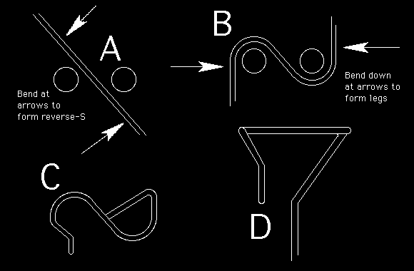

A number of folks have been asking about bending prop hooks, and what are good designs. The Reverse-S hook has been a favorite for a long time, despite apparent complexity. Its advantage is that it helps prevent the motor from climbing on the hook, allowing longer, more consistent motor runs. Who invented it? I don't know, it far predates my involvement with Free Flight.
At first glance, it seems difficult to bend, but with a little practice, you should find it well worth the couple tries it took to get the hang of it. Try with some soft wire, like paper clip stock and it should come quickly. The only unusual tool you will need is a pair of round nose pliers.
First hold the wire in the pliers as shown below in figure A. Twist the loose ends counter clockwise as shown in fig. B. The two ends are then bent down at the points shown by the two arrows. If you bend the legs the wrong way, you will have a prop hook which the motors will easily climb off. The legs are then shaped as shown in fig's C&D. One leg is cut off and shaped to allow easy loading of the motor, the longer leg is bent to form the prop shaft. The key to getting a smooth running prop is to center the shaft as accurately as possible under the hook. This is done by trial and error, bend a little, spin the shaft between your fingers while sighting the hook, and make another adjustment. Honestly, this is the only slightly tricky part of bending these hooks. Remember that an off-center hook will cause a lot of power and duration robbing vibration. It is worth an extra bend or two to get it right.
When I can't find my RN pliers on my cluttered work bench, I use two steel pins clamped in a vice as a bending jig. This works just as well, and also allows bending smaller hooks for indoor duration type models. For instance, for a ministick prop hook, I use two pieces of .032 music wire clamped in a vise. They are spaced just far enough apart to allow insertion of the 0.011 wire I use for the shafts.
One last quick point. If you are working with a piece of wire longer than a few inches, please take a couple seconds to put a masking tape flag on the long end. These small sizes of wire whip around pretty easily. If an end finds your eye, it will be tough to see how true the hook is running, or how beautifully it flies your model.

return to tips | return to home page
Copyright 1998, Thayer Syme. All rights reserved